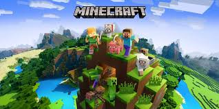

Minecraft

Minecraft is a game originally made by Notch which was then bought by Mojang.Then Microsoft aproached them asking if they could program minecraft but with a different programming language, that became Minecraft: Beadrock Edition. So today you receive 2 versions when purchasing minecraft, that being C++ and Java.